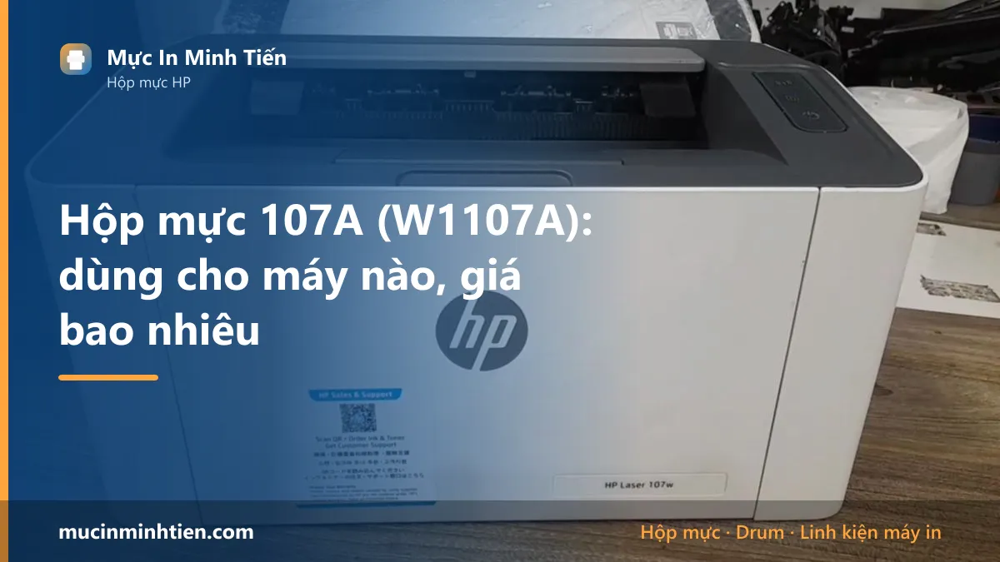
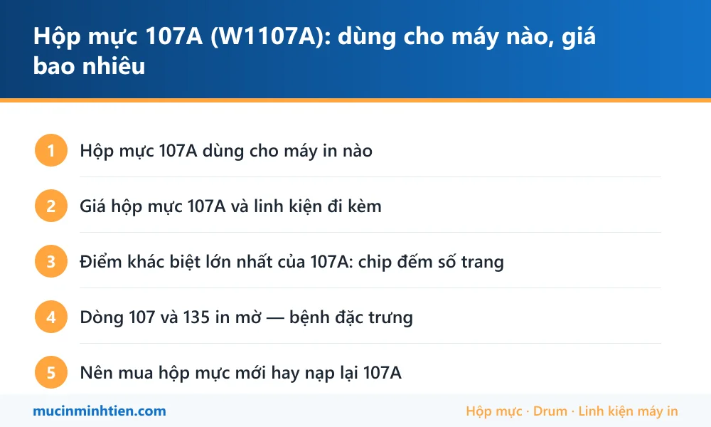

Hộp mực 107A (W1107A): dùng cho máy nào, giá bao nhiêu

Hộp mực 107A (mã HP W1107A) dùng cho HP Laser 107a, 107w, 135a, 135w, 135ag và 137fnw. Một hộp đầy in được khoảng 1.000 trang. Đây là mã có chip đếm số trang, nạp mực xong phải xử lý chip.
Hộp mực 107A dùng cho máy in nào
| Dòng máy | Model cụ thể | Ghi chú |
|---|---|---|
| HP Laser | 107a, 107w, 107r | Máy in đen trắng đơn năng, bản w có Wi-Fi |
| HP Laser MFP | 135a, 135w, 135ag, 135r | Máy in kèm scan và copy |
| HP Laser MFP | 137fnw, 137fwg | Bản đầy đủ có thêm fax và mạng LAN |
Giá hộp mực 107A và linh kiện đi kèm
Bảng dưới là hàng đang có tại kho 77 Bắc Hải, Phường Diên Hồng, TP.HCM, giá tham khảo cho khách lẻ. Đây là giá thật trong bảng giá công khai, không phải giá quảng cáo.
| Sản phẩm | Nhóm | Giá tham khảo |
|---|---|---|
| Chíp 107A dùng cho hộp mực may in HP 107W, 135W - chíp 107 | Hộp mực & mực in máy in | 35.000 đ |
| Trục Sạc dùng cho hộp mực HP 107A , máy in M135a, M137fdn, M135w, M107w (W1107A)( dùng cho phôi CH ) - Sạc 107A | Hộp mực & mực in máy in | 40.000 đ |
| Combo 2 chai Mực đổ HP 107w nạp cho Hộp mực máy in HP 107a/ 107w/ 135a/ 135w - Mực nạp HP 107 | Hộp mực & mực in máy in | 50.000 đ |
| Combo 2 chai Mực đổ HP 107w nạp cho Hộp mực máy in HP 107a/ 107w/ 135a/ 135w(80g) - 107 | Hộp mực & mực in máy in | 50.000 đ |
| Combo Mực đổ +chíp HP 107w nạp cho Hộp mực máy in HP 107a/ 107w/ 135a/ 135w(80g) - 2937_121221642 | Hộp mực & mực in máy in | 55.000 đ |
| Mực hộp laser HP 107A Black (W1107A) - Dùng cho Máy in HP 107a/ 107w/ 135a/ 135w (không chíp) - HP107 | Hộp mực & mực in máy in | 190.000 đ |
| Hộp mực HP 107A (W1107A) chính hãng — Minh Tiến | Hộp mực & mực in máy in | 230.000 đ |
| Combo 2 Trống drum máy in hp 107A - 107w - 135a - 135w - Drum 107A | Drum / Trống máy in | 80.000 đ |
| Gạt mực ( gạt lớn ) dùng cho máy HP 107a, máy in M135a, M137fdn, M135w, M107w (W1107A)( dùng cho phôi CH ) - Gạt lớn 107A | Gạt mực | 20.000 đ |
| Lô ép 107 dùng cho hộp mực HP 107a, máy in M135a, M137fdn, M135w, M107w (W1107A) - Lô ép 107 | Lô sấy, lô ép & linh kiện sấy | 140.000 đ |
| Mực hộp laser HP 107A Black (W1107A) - Dùng cho Máy in HP 107a/ 107w/ 135a/ 135w (có chip) - Mực 107 | Chip & Seal | 200.000 đ |
| Trục từ dùng cho hộp mực HP 107A , máy in M135a, M137fdn, M135w, M107w (W1107A)( dùng cho phôi CH ) - Từ 107A | Trục từ | 45.000 đ |
Không thấy mã cần tìm? Dùng công cụ tra cứu theo model máy hoặc xem bảng giá đầy đủ 773 mã.
Điểm khác biệt lớn nhất của 107A: chip đếm số trang
Khác với các mã đời cũ như 12A hay 35A, hộp mực 107A có chip đếm số trang gắn ở đầu hộp. Chip này không đo lượng mực còn lại — nó chỉ đếm số trang đã in. Khi đủ định mức, chip khóa và máy báo hết mực, kể cả khi trong hộp vẫn còn mực.
Đây là lý do rất nhiều khách gọi tới hỏi: vừa nạp đầy mực xong mà máy vẫn báo hết. Nguyên nhân không phải thợ nạp thiếu, mà là chip chưa được xử lý.
Hai cách xử lý:
- Thay chip mới — cách phổ biến và chắc chắn nhất. Chip rời cho 107A có sẵn, chi phí thấp, tháo lắp nhanh.
- Dùng hộp mực tương thích không chip hoặc chip vĩnh viễn — một số dòng máy đời đầu chấp nhận, nhưng bản firmware mới của HP có thể từ chối.
Chi tiết cách đọc đèn báo và xử lý khi máy khóa nằm ở bài cách reset máy in HP và lỗi chấm than 107a, 107w.
Dòng 107 và 135 in mờ — bệnh đặc trưng
Dòng HP Laser 107 và 135 là máy giá rẻ, thiết kế gọn, nên trục từ và drum có tuổi thọ ngắn hơn các dòng LaserJet đời cũ. Biểu hiện thường gặp nhất sau khoảng hai đến ba lần nạp mực là bản in nhạt dần dù hộp còn đầy.
Trước khi kết luận phải thay hộp mực, hãy loại trừ theo thứ tự: kiểm tra chế độ EconoMode trong driver, lắc hộp mực in thử, rồi mới nhìn tới trục từ và drum. Toàn bộ quy trình chẩn đoán có ở bài HP 107a in mờ, nhạt chữ: 6 nguyên nhân và cách xử lý.
Nên mua hộp mực mới hay nạp lại 107A
107A nạp lại được và tiết kiệm, nhưng bắt buộc phải tính cả chi phí chip vào bài toán. Một lần nạp mực kèm thay chip vẫn rẻ hơn đáng kể so với mua hộp mực chính hãng mới.
Nên nạp lại khi: máy còn dùng nhiều, vỏ hộp còn kín, bản in trước khi hết vẫn sắc nét.
Nên cân nhắc hộp mực tương thích mới khi: hộp đã nạp nhiều lần, trục từ và drum đều đã yếu — lúc đó cộng tiền hai linh kiện cộng chip cộng công nạp đã xấp xỉ giá một hộp tương thích mới còn nguyên bộ.
Không nên mua hộp mực trôi nổi giá quá rẻ cho dòng máy này: mực bột sai loại làm bẩn drum rất nhanh, và drum của 107A không rẻ.

Câu hỏi thường gặp về hộp mực 107A
Máy HP 107a báo hết mực nhưng hộp còn mực, xử lý thế nào?
Hộp mực 107A in được bao nhiêu trang?
HP 107a và 107w khác nhau chỗ nào?
Nạp mực 107A có làm hỏng máy không?
Có nên mua hộp mực 107A tương thích thay vì chính hãng không?
Bài viết liên quan
- HP 107a in mờ, nhạt chữ: 6 nguyên nhân và cách xử lý
- Cách reset máy in HP và xử lý lỗi chấm than HP 107a, 107w
- Phân biệt mực in chính hãng và mực trôi nổi
- Hộp mực 49A: dùng cho máy nào, giá bao nhiêu
- Hộp mực 26A: dùng cho máy nào, giá bao nhiêu
- Tra hộp mực và linh kiện theo model máy in
- Nạp mực máy in tận nơi TP.HCM từ 80.000đ